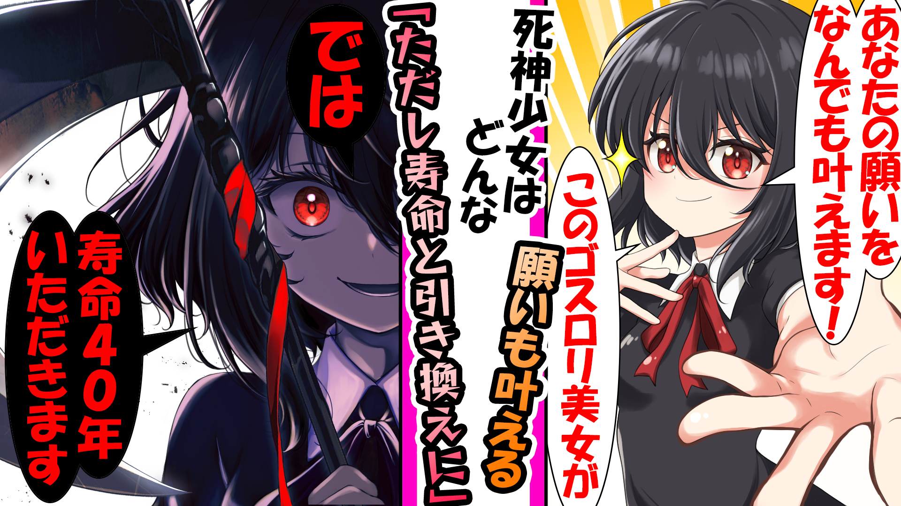

死神少女【原稿Ver】

寿命と引き換えに、どんな願いも叶える――そう告げて現れた、少女の姿をした死神「しーちゃん」。彼女が見えるのは、フリーターの青年・金井ジュンただ一人だった。
死神が見通すのは、人の「死の匂い」。彼女が関わるのは、いつも人生の最期に立つ人たち。父との最後のキャッチボールを願う息子、絶縁した娘にもう一度会いたい母、報われない絵を描き続ける画家、罪を背負った死刑囚――。
寿命を差し出してまで叶えたい願いとは何か。命の重さと、人の優しさと身勝手さを描く連作短編。1話完結で、どこからでも読めます。
各話一覧
-
EP.01第1話「死神との出会い」2026.05.01→
ある日、フリーターの金井ジュンの部屋に死神が現れる。寿命と引き換えに願いを叶えるという彼女を、ジュンは一度は拒む。だが末期の病で倒れた父との「最後の約束」を前に、ジュンは初めて取引を選ぶ。すべての始まりとなる物語。
-
EP.02第2話「母と娘の26時間」2026.05.04→
入院先で出会った余命わずかな女性ヒカリ。彼女の願いは、昔置き去りにした娘にもう一度会うこと。ジュンは自分の足で娘を探し出すが――。再会の代償と、死神が背負う宿命が明かされる。
-
EP.03第3話「父の正体」2026.05.07→
「死にたい」と呟く16歳のマナミの前に死神が現れる。彼女が会いたがる父には、母が隠し続けた秘密があった。家族を守るために嘘をつき続けた母の愛が胸を打つ一話。
-
EP.04第4話「報われない絵」2026.05.10→
死の匂いに導かれ、死神が訪れたのは無名の画家・平井誠のもとだった。誰にも見向きされない絵を描き続ける彼が、命を削ってでも叶えたかった夢とは。努力と才能、そして報われることの意味を描く物語。
-
EP.05第5話「消える記憶」2026.05.13→
4年間眠り続ける夫を看病し続ける女性サトミ。彼女の願いを前に、夫が本当に望んだのは思いもよらないものだった。愛するがゆえの選択を描く、切ない一話。
-
EP.06第6話「友達のつくり方」2026.05.16→
余命3年の少年ユウジと死神の交流の物語。折り紙、ポテチ、窓から見えるカラス――ささやかな日々の中で、二人の間に芽生えたものとは。死神の「友達」が増えていく。
-
EP.07第7話「ショック療法」2026.05.19→
パチンコに溺れ、人生に絶望した男。死神は寿命と引き換えに「勝てる体」を与える。だが、その取引には死神なりの“仕掛け”が隠されていた。生きることの意味を問い直す異色作。
-
EP.08第8話「死神たちの流儀」2026.05.22→
しーちゃん以外の死神――ディーテ、ヘーラが登場。効率を重んじるヘーラが、息子との約束「富士山登頂」を願う老人と過ごす。死神それぞれの“別れとの向き合い方”が描かれる。
-
EP.09第9話「死刑囚の最後の願い」2026.05.25→
獄中の死刑囚・西条ケンの前に現れた死神。彼が願ったのは、被害者遺族への謝罪だった。罪と償い、そしてわずかな寿命が誰かにもたらすもの――。重く静かな物語。